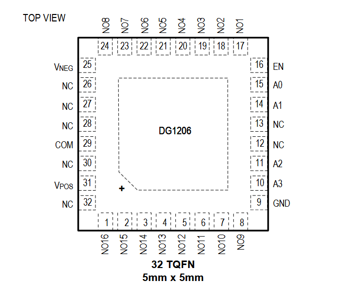
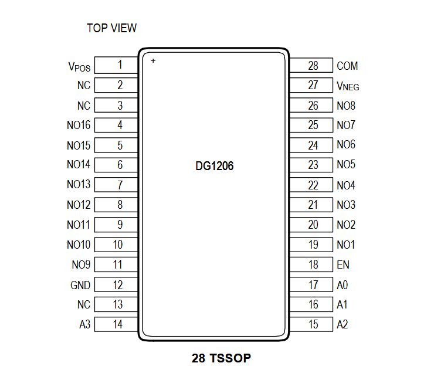
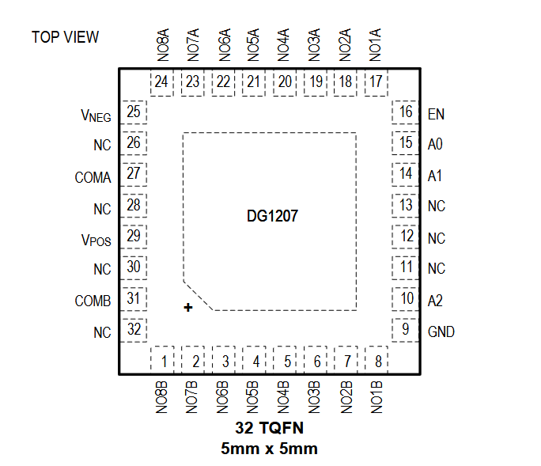
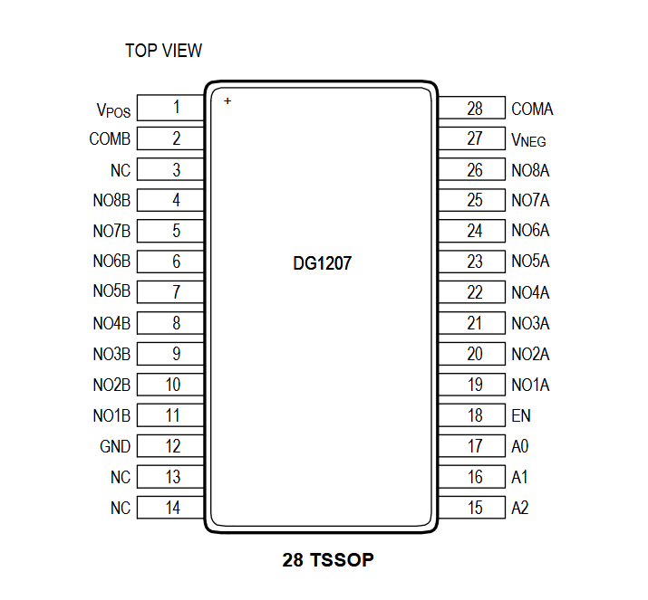

DG1206ETJ+

Pin Description
| PIN | NAME | FUNCTION |
|---|---|---|
| POWER SUPPLY | ||
| 31 | VPOS | Positive Power Supply. Bypass VPOS to GND with a minimum 0.1μF ceramic capacitor as close to the pin as possible. |
| 25 | VNEG | Negative Power Suppy. Bypass VNEG to GND with a minimum 0.1μF ceramic capacitor as close to the pin as possible. In single-supply applications, connect VNEG to GND. |
| 9 | GND | Logic Ground Reference |
| 12,13,26, 27,28,30,32 | NC | Not Connected |
| DIGITAL INPUTS | ||
| EP | EP | Exposed Pad. Leave unconnected or tied to VNEG. Do not connect to GND. |
| 10 | A3 | Logic-Address Input. See the Control Logic section for more information. |
| 11 | A2 | Logic-Address Input. See the Control Logic section for more information. |
| 14 | A1 | Logic-Address Input. See the Control Logic section for more information. |
| 15 | A0 | Logic-Address Input. See the Control Logic section for more information. |
| 16 | EN | Enable Input. Drive EN high to enable the multiplexer. Drive EN low to disable all switches. Do not leave EN unconnected. |
| ANALOG SWITCH | ||
| 29 | COM | Common Bidirectional Analog-Signal Terminal. It can be either an input or output. |
| 1 | NO16 | Normally-Open Bidirectional Analog-Signal Terminal. It can be either an input or output. |
| 2 | NO15 | Normally-Open Bidirectional Analog-Signal Terminal. It can be either an input or output. |
| 3 | NO14 | Normally-Open Bidirectional Analog-Signal Terminal. It can be either an input or output. |
| 4 | NO13 | Normally-Open Bidirectional Analog-Signal Terminal. It can be either an input or output. |
| 5 | NO12 | Normally-Open Bidirectional Analog-Signal Terminal. It can be either an input or output. |
| 6 | NO11 | Normally-Open Bidirectional Analog-Signal Terminal. It can be either an input or output. |
| 7 | NO10 | Normally-Open Bidirectional Analog-Signal Terminal. It can be either an input or output. |
| 8 | NO9 | Normally-Open Bidirectional Analog-Signal Terminal. It can be either an input or output. |
| 24 | NO8 | Normally-Open Bidirectional Analog-Signal Terminal. It can be either an input or output. |
| 23 | NO7 | Normally-Open Bidirectional Analog-Signal Terminal. It can be either an input or output. |
| 22 | NO6 | Normally-Open Bidirectional Analog-Signal Terminal. It can be either an input or output. |
| 21 | NO5 | Normally-Open Bidirectional Analog-Signal Terminal. It can be either an input or output. |
| 20 | NO4 | Normally-Open Bidirectional Analog-Signal Terminal. It can be either an input or output. |
| 19 | NO3 | Normally-Open Bidirectional Analog-Signal Terminal. It can be either an input or output. |
| 18 | NO2 | Normally-Open Bidirectional Analog-Signal Terminal. It can be either an input or output. |
| 17 | NO1 | Normally-Open Bidirectional Analog-Signal Terminal. It can be either an input or output. |
DG1206EUI+

Pin Description
| PIN | NAME | FUNCTION |
|---|---|---|
| POWER SUPPLY | ||
| 1 | VPOS | Positive Power Supply. Bypass VPOS to GND with a minimum 0.1μF ceramic capacitor as close to the pin as possible. |
| 27 | VNEG | Negative Power Suppy. Bypass VNEG to GND with a minimum 0.1μF ceramic capacitor as close to the pin as possible. In single-supply applications, connect VNEG to GND. |
| 12 | GND | Logic Ground Reference |
| 2,3,13 | NC | Not Connected |
| DIGITAL INPUTS | ||
| 14 | A3 | Logic-Address Input. See the Control Logic section for more information. |
| 15 | A2 | Logic-Address Input. See the Control Logic section for more information. |
| 16 | A1 | Logic-Address Input. See the Control Logic section for more information. |
| 17 | A0 | Logic-Address Input. See the Control Logic section for more information. |
| 18 | EN | Enable Input. Drive EN high to enable the multiplexer. Drive EN low to disable all switches. Do not leave EN unconnected. |
| ANALOG SWITCH | ||
| 28 | COM | Common Bidirectional Analog-Signal Terminal. It can be either an input or output. |
| 4 | NO16 | Normally-Open Bidirectional Analog-Signal Terminal. It can be either an input or output. |
| 5 | NO15 | Normally-Open Bidirectional Analog-Signal Terminal. It can be either an input or output. |
| 6 | NO14 | Normally-Open Bidirectional Analog-Signal Terminal. It can be either an input or output. |
| 7 | NO13 | Normally-Open Bidirectional Analog-Signal Terminal. It can be either an input or output. |
| 8 | NO12 | Normally-Open Bidirectional Analog-Signal Terminal. It can be either an input or output. |
| 9 | NO11 | Normally-Open Bidirectional Analog-Signal Terminal. It can be either an input or output. |
| 10 | NO10 | Normally-Open Bidirectional Analog-Signal Terminal. It can be either an input or output. |
| 11 | NO9 | Normally-Open Bidirectional Analog-Signal Terminal. It can be either an input or output. |
| 26 | NO8 | Normally-Open Bidirectional Analog-Signal Terminal. It can be either an input or output. |
| 25 | NO7 | Normally-Open Bidirectional Analog-Signal Terminal. It can be either an input or output. |
| 24 | NO6 | Normally-Open Bidirectional Analog-Signal Terminal. It can be either an input or output. |
| 23 | NO5 | Normally-Open Bidirectional Analog-Signal Terminal. It can be either an input or output. |
| 22 | NO4 | Normally-Open Bidirectional Analog-Signal Terminal. It can be either an input or output. |
| 21 | NO3 | Normally-Open Bidirectional Analog-Signal Terminal. It can be either an input or output. |
| 20 | NO2 | Normally-Open Bidirectional Analog-Signal Terminal. It can be either an input or output. |
| 19 | NO1 | Normally-Open Bidirectional Analog-Signal Terminal. It can be either an input or output. |
DG1207ETJ+

Pin Description
| PIN | NAME | FUNCTION |
|---|---|---|
| POWER SUPPLY | ||
| 29 | VPOS | Positive Power Supply. Bypass VPOS to GND with a minimum 0.1μF ceramic capacitor as close to the pin as possible. |
| 25 | VNEG | Negative Power Suppy. Bypass VNEG to GND with a minimum 0.1μF ceramic capacitor as close to the pin as possible. In single-supply applications, connect VNEG to GND. |
| 9 | GND | Logic Ground Reference |
| 11,12,13, 26,28,30,32 | NC | Not Connected |
| EP | EP | Exposed Pad. Leave unconnected or tied to VNEG. Do not connect to GND. |
| DIGITAL INPUTS | ||
| 10 | A2 | Logic-Address Input. See the Control Logic section for more information. |
| 14 | A1 | Logic-Address Input. See the Control Logic section for more information. |
| 15 | A0 | Logic-Address Input. See the Control Logic section for more information. |
| 16 | EN | Enable Input. Drive EN high to enable the multiplexer. Drive EN low to disable all switches. Do not leave EN unconnected. |
| ANALOG SWITCH | ||
| 31 | COMB | B-Side Common Bidirectional Analog-Signal Terminal. It can be either an input or output. |
| 27 | COMA | A-Side Common Bidirectional Analog-Signal Terminal. It can be either an input or output. |
| 1 | NO8B | B-Side Normally-Open Bidirectional Analog-Signal Terminal. It can be either an input or output. |
| 2 | NO7B | B-Side Normally-Open Bidirectional Analog-Signal Terminal. It can be either an input or output. |
| 3 | NO6B | B-Side Normally-Open Bidirectional Analog-Signal Terminal. It can be either an input or output. |
| 4 | NO5B | B-Side Normally-Open Bidirectional Analog-Signal Terminal. It can be either an input or output. |
| 5 | NO4B | B-Side Normally-Open Bidirectional Analog-Signal Terminal. It can be either an input or output. |
| 6 | NO3B | B-Side Normally-Open Bidirectional Analog-Signal Terminal. It can be either an input or output. |
| 7 | NO2B | B-Side Normally-Open Bidirectional Analog-Signal Terminal. It can be either an input or output. |
| 8 | NO1B | B-Side Normally-Open Bidirectional Analog-Signal Terminal. It can be either an input or output. |
| 24 | NO8A | A-Side Normally-Open Bidirectional Analog-Signal Terminal. It can be either an input or output. |
| 23 | NO7A | A-Side Normally-Open Bidirectional Analog-Signal Terminal. It can be either an input or output. |
| 22 | NO6A | A-Side Normally-Open Bidirectional Analog-Signal Terminal. It can be either an input or output. |
| 21 | NO5A | A-Side Normally-Open Bidirectional Analog-Signal Terminal. It can be either an input or output. |
| 20 | NO4A | A-Side Normally-Open Bidirectional Analog-Signal Terminal. It can be either an input or output. |
| 19 | NO3A | A-Side Normally-Open Bidirectional Analog-Signal Terminal. It can be either an input or output. |
| 18 | NO2A | A-Side Normally-Open Bidirectional Analog-Signal Terminal. It can be either an input or output. |
| 17 | NO1A | A-Side Normally-Open Bidirectional Analog-Signal Terminal. It can be either an input or output. |
DG1207EUI+

Pin Description
| PIN | NAME | FUNCTION |
|---|---|---|
| POWER SUPPLY | ||
| 1 | VPOS | Positive Power Supply. Bypass VPOS to GND with a minimum 0.1μF ceramic capacitor as close to the pin as possible. |
| 27 | VNEG | Negative Power Suppy. Bypass VNEG to GND with a minimum 0.1μF ceramic capacitor as close to the pin as possible. In single-supply applications, connect VNEG to GND. |
| 12 | GND | Logic Ground Reference |
| 3,13,14 | NC | Not Connected |
| DIGITAL INPUTS | ||
| 15 | A2 | Logic-Address Input. See the Control Logic section for more information. |
| 16 | A1 | Logic-Address Input. See the Control Logic section for more information. |
| 17 | A0 | Logic-Address Input. See the Control Logic section for more information. |
| 18 | EN | Enable Input. Drive EN high to enable the multiplexer. Drive EN low to disable all switches. Do not leave EN unconnected. |
| ANALOG SWITCH | ||
| 2 | COMB | B-Side Common Bidirectional Analog-Signal Terminal. It can be either an input or output. |
| 28 | COMA | A-Side Common Bidirectional Analog-Signal Terminal. It can be either an input or output. |
| 4 | NO8B | B-Side Normally-Open Bidirectional Analog-Signal Terminal. It can be either an input or output. |
| 5 | NO7B | B-Side Normally-Open Bidirectional Analog-Signal Terminal. It can be either an input or output. |
| 6 | NO6B | B-Side Normally-Open Bidirectional Analog-Signal Terminal. It can be either an input or output. |
| 7 | NO5B | B-Side Normally-Open Bidirectional Analog-Signal Terminal. It can be either an input or output. |
| 8 | NO4B | B-Side Normally-Open Bidirectional Analog-Signal Terminal. It can be either an input or output. |
| 9 | NO3B | B-Side Normally-Open Bidirectional Analog-Signal Terminal. It can be either an input or output. |
| 10 | NO2B | B-Side Normally-Open Bidirectional Analog-Signal Terminal. It can be either an input or output. |
| 11 | NO1B | B-Side Normally-Open Bidirectional Analog-Signal Terminal. It can be either an input or output. |
| 26 | NO8A | A-Side Normally-Open Bidirectional Analog-Signal Terminal. It can be either an input or output. |
| 25 | NO7A | A-Side Normally-Open Bidirectional Analog-Signal Terminal. It can be either an input or output. |
| 24 | NO6A | A-Side Normally-Open Bidirectional Analog-Signal Terminal. It can be either an input or output. |
| 23 | NO5A | A-Side Normally-Open Bidirectional Analog-Signal Terminal. It can be either an input or output. |
| 22 | NO4A | A-Side Normally-Open Bidirectional Analog-Signal Terminal. It can be either an input or output. |
| 21 | NO3A | A-Side Normally-Open Bidirectional Analog-Signal Terminal. It can be either an input or output. |
| 20 | NO2A | A-Side Normally-Open Bidirectional Analog-Signal Terminal. It can be either an input or output. |
| 19 | NO1A | A-Side Normally-Open Bidirectional Analog-Signal Terminal. It can be either an input or output. |